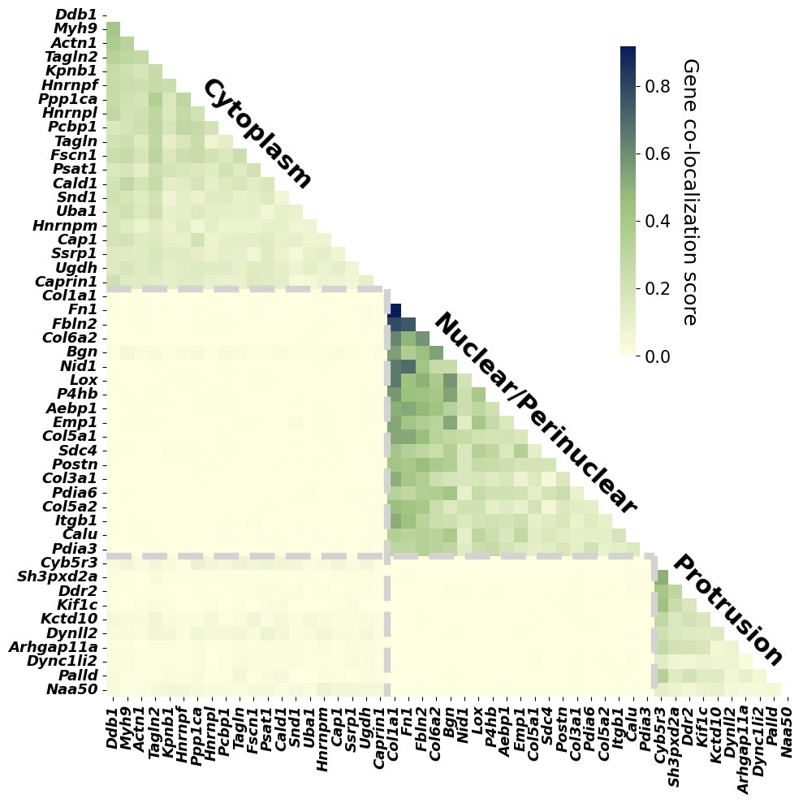
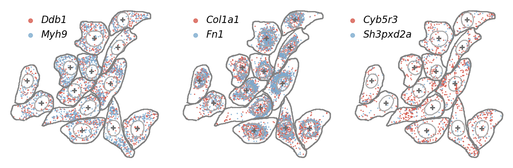

Gene co-localization analysis
In this section, we extract latent representations for each gene within individual cells and perform gene co-localization analysis to assess whether SVC learns semantically meaningful and cell-specific gene representations.
import warnings
warnings.filterwarnings("ignore")
from model.train import *
from model.utils import *
import torch
from torch.utils.data import DataLoader
import numpy as np
import pandas as pd
import matplotlib.pyplot as plt
import seaborn as sns
data_path = './SVC/'
dataset = 'data/seqfish'
device = 'cuda:1'
train_seqfish = np.load(f"{data_path}{dataset}/train_seqfish.npz")
train_image = train_seqfish["data_ori"]
train_cell_morphology = train_seqfish["cell_morphology"]
train_nuclear_morphology = train_seqfish["nuclear_morphology"]
train_data_location = train_seqfish["location"]
train_cell_cycle_label = train_seqfish["identity_label"]
train_cell_cycle = train_seqfish["identity"]
train_dataset = SVC_Dataset(
data_ori=train_image,
location=train_data_location,
cell_morphology_vec=train_cell_morphology,
nuclear_morphology_vec=train_nuclear_morphology,
identity_vec=train_cell_cycle_label,
)
print("number of training cells:", len(train_dataset),', number of genes:', train_image.shape[1])
cell_median_train = np.median(train_image.sum((1,2,3)))
read_dir =f'{data_path}{dataset}/gene2vec_weight_seqfish.npy'
gene_names = np.loadtxt(f'{data_path}{dataset}/gene_names.txt', dtype=str).tolist()
gene2vec_weight = torch.from_numpy(np.load(read_dir)).float() ##n_gene * 200 print("shape of gene2vec_weight", gene2vec_weight.shape)
train_loader = DataLoader(train_dataset, batch_size = 16, shuffle = False, num_workers = 4)
number of training cells: 157 , number of genes: 1000
load the trained model and extract latent representations
ckpt_dir = f"{data_path}/checkpoints/"
ckpt = torch.load(ckpt_dir +'SVC_seqfish.pth', map_location=device)
state = ckpt.get("model_state_dict", ckpt)
state = {k.removeprefix("module."): v for k, v in state.items()}
model = SVC(
gene2vec_weight = gene2vec_weight,
cell_identity_dim = train_cell_cycle_label.shape[1],
).to(device)
model.load_state_dict(state)
latent_np = extract_latent_embeddings(
model=model,
loader=train_loader,
device=device
)
# np.save(f"{data_path}/output/seqfish/embeddings_train.npy", latent_np)
gene co-localization analysis for 49 well-annotated genes
# seqfish+ genes in extended data fig 3
protrusionList = ['Cyb5r3', 'Sh3pxd2a', 'Ddr2', 'Kif1c', 'Kctd10',
'Dynll2', 'Arhgap11a', 'Dync1li2', 'Palld', 'Naa50']
nuclearList = ['Col1a1', 'Fn1', 'Fbln2', 'Col6a2', 'Bgn',
'Nid1', 'Lox', 'P4hb', 'Aebp1', 'Emp1',
'Col5a1', 'Sdc4', 'Postn', 'Col3a1', 'Pdia6',
'Col5a2', 'Itgb1', 'Calu', 'Pdia3']
cytoplasmList = ['Ddb1', 'Myh9', 'Actn1', 'Tagln2', 'Kpnb1',
'Hnrnpf', 'Ppp1ca', 'Hnrnpl', 'Pcbp1', 'Tagln',
'Fscn1', 'Psat1', 'Cald1', 'Snd1', 'Uba1',
'Hnrnpm', 'Cap1', 'Ssrp1', 'Ugdh', 'Caprin1']
nuclearSub1List = ['Thbs1', 'Serpine1', 'Ptx3', 'Tnc']
nuclearSub2List = ['Flna', 'Flnb', 'Plec', 'Flnc', 'Iqgap1']
nuclearSub3List = ['Numa1', 'Gorasp2']
print(len(nuclearList),len(cytoplasmList),len(protrusionList))
19 20 10
calculate gene colocalization score based on pairwise distances of each gene pair within cells
gene_interested = [gene for gene in cytoplasmList + nuclearList + protrusionList]
train_count_sum = train_image.sum(axis=(2,3))
gene_colocal_score = cal_gene_colocal_score(latent_np, gene_names, train_count_sum, gene_interested)
0%| | 0/157 [00:00<?, ?it/s]
100%|██████████| 157/157 [00:01<00:00, 147.50it/s]
A heatmap is used to visualize the gene co-localization matrix inferred by SVC, revealing three distinct spatial localization clusters among the 49 genes.
custom_cmap = create_color_cmap('#FEFEE1','#9bc07c','#081D58', name='white_to_red')
fig, ax = plt.subplots(figsize=(15, 10))
mask = np.triu(np.ones_like(gene_colocal_score, dtype=bool))
gene_interested_capitalized = [gene for gene in gene_interested]
heatmap = sns.heatmap(gene_colocal_score, cmap=custom_cmap,xticklabels=gene_interested_capitalized, yticklabels=gene_interested_capitalized,mask=mask, cbar_kws={'shrink': 0.45,'pad':-0.05,'anchor':(-0.7,0.9),"location":"right"}, # 调整颜色条大小 mask=mask,#
square=True)
heatmap.set_xticklabels(heatmap.get_xticklabels(), fontweight='bold',fontsize=13,fontstyle='italic')
heatmap.set_yticklabels(heatmap.get_xticklabels(), fontweight='bold',fontsize=13,fontstyle='italic')
cbar = heatmap.collections[0].colorbar
cbar.ax.set_position([1, 0.1, 0.9, 0.2])
cbar.ax.tick_params(labelsize=15)
cbar.set_label('Gene co-localization score', rotation=270, fontsize=18,loc='top',labelpad=25)##,fontweight='bold' proportion of cells in which the gene pair is considered as the 10 nearest neighbors
cbar_ax = cbar.ax
text_obj = cbar_ax.get_yaxis().get_label()
text_obj.set_position((-0.3, 0.1))
ax.plot([0, 20], [20, 20], color='lightgray', linestyle='--',linewidth=6)
ax.plot([0, 39], [39, 39], color='lightgray', linestyle='--',linewidth=6)
ax.plot([20, 20], [20, 49], color='lightgray', linestyle='--',linewidth=6)
ax.plot([39, 39], [39, 49], color='lightgray', linestyle='--',linewidth=6)
y_bottom=0
ax.text(15, y_bottom+9, 'Cytoplasm', va='center', ha='right', color='black', fontsize=22, fontweight='bold',rotation=315)
ax.text(38, y_bottom+29, 'Nuclear/Perinuclear', va='center', ha='right', color='black', fontsize=22, fontweight='bold',rotation=315)
ax.text(48.5, y_bottom+43, 'Protrusion', va='center', ha='right', color='black', fontsize=22, fontweight='bold',rotation=315)
plt.tight_layout()
# fig.savefig(f"{data_path}output/seqfish/figures/gene_colocalization_49.png",
# transparent=True,
# dpi=300,
# bbox_inches="tight")
plt.show()

Further visualizing observed transcript profiles within original cells for three representative co-localization gene pairs.
print("most co-localized gene with Ddb1:",gene_interested[gene_colocal_score[gene_interested.index('Ddb1'),:].argsort()[::-1][0]])
print("\n")
print("most co-localized gene with Col1a1:",gene_interested[gene_colocal_score[gene_interested.index('Col1a1'),:].argsort()[::-1][0]])
print("\n")
print("most co-localized gene with Cyb5r3:",gene_interested[gene_colocal_score[gene_interested.index('Cyb5r3'),:].argsort()[::-1][0]])
most co-localized gene with Ddb1: Myh9
most co-localized gene with Col1a1: Fn1
most co-localized gene with Cyb5r3: Sh3pxd2a
seqfish_data = pd.read_pickle(f"{data_path}{dataset}/seqfish_data_dict.pkl")['data_df']
print(seqfish_data.head())
df_cell_contour = pd.read_pickle(f"{data_path}{dataset}/cell_mask_contour_preprocessed.pkl")
print(df_cell_contour.head())
df_nuclear_contour = pd.read_pickle(f"{data_path}{dataset}/nuclear_mask_contour_preprocessed.pkl")
print(df_nuclear_contour.head())
x y gene cell nucleus batch umi centerX \
0 1217.437557 557.583252 4933401b06rik 5-0 -1 0 1 1003
1 1096.190309 394.835294 4933401b06rik 5-0 5 0 1 1003
2 1093.189494 572.832405 4933401b06rik 5-0 -1 0 1 1003
3 1005.120220 297.196271 4933401b06rik 5-0 -1 0 1 1003
4 1142.815026 378.376491 4933401b06rik 5-0 -1 0 1 1003
centerY type sc_total
0 425 fibroblast 32224
1 425 fibroblast 32224
2 425 fibroblast 32224
3 425 fibroblast 32224
4 425 fibroblast 32224
cell x y centerX centerY direction_vec distance_to_center
0 0-0 521 496 1079 724 -158.0 602.783543
1 0-0 519 496 1079 724 -158.0 604.635427
2 0-0 517 494 1079 724 -157.5 607.242950
3 0-0 515 494 1079 724 -158.0 609.094410
4 0-0 513 492 1079 724 -157.5 611.702542
cell x y centerX centerY
0 0-0 1051 631 1079 724
1 0-0 1050 632 1079 724
2 0-0 1049 632 1079 724
3 0-0 1048 632 1079 724
4 0-0 1047 632 1079 724
batch='0'
preserve_idx_seqfish_data =[]
for i in seqfish_data.cell:
if i.split('-')[1] == batch:
preserve_idx_seqfish_data.append(True)
else:
preserve_idx_seqfish_data.append(False)
preserve_idx_seqfish_data = np.array(preserve_idx_seqfish_data)
preserve_idx_cell_mask_contour =[]
for i in df_cell_contour.cell:
if i.split('-')[1] == batch:
preserve_idx_cell_mask_contour.append(True)
else:
preserve_idx_cell_mask_contour.append(False)
preserve_idx_cell_mask_contour = np.array(preserve_idx_cell_mask_contour)
preserve_idx_nuclear_mask_contour =[]
for i in df_nuclear_contour.cell:
if i.split('-')[1] == batch:
preserve_idx_nuclear_mask_contour.append(True)
else:
preserve_idx_nuclear_mask_contour.append(False)
preserve_idx_nuclear_mask_contour = np.array(preserve_idx_nuclear_mask_contour)
seqfish_data_i = seqfish_data[preserve_idx_seqfish_data]
cell_mask_contour_i= df_cell_contour[preserve_idx_cell_mask_contour]
nuclear_mask_contour_i = df_nuclear_contour[preserve_idx_nuclear_mask_contour]
fig, ax = plt.subplots(1, 3, figsize=(19, 6), gridspec_kw={'hspace': 0., 'wspace': 0.01})
gene_pair0 = ['Ddb1', 'Myh9']
seqfish_data_i_gene1 = seqfish_data_i[seqfish_data_i.gene == gene_pair0[0]]
seqfish_data_i_gene2 = seqfish_data_i[seqfish_data_i.gene == gene_pair0[1]]
gene_pair1 = ['Col1a1', 'Fn1']
seqfish_data_i_gene3 = seqfish_data_i[seqfish_data_i.gene == gene_pair1[0]]
seqfish_data_i_gene4 = seqfish_data_i[seqfish_data_i.gene == gene_pair1[1]]
gene_pair2 =['Cyb5r3', 'Sh3pxd2a']
seqfish_data_i_gene5 = seqfish_data_i[seqfish_data_i.gene == gene_pair2[0]]
seqfish_data_i_gene6 = seqfish_data_i[seqfish_data_i.gene == gene_pair2[1]]
ax[0].scatter(seqfish_data_i_gene1['x'], seqfish_data_i_gene1['y'], label=gene_pair0[0], alpha=0.8, s=3,color='#d6594c')
ax[0].scatter(seqfish_data_i_gene2['x'], seqfish_data_i_gene2['y'], label=gene_pair0[1], alpha=0.8, s=3,color='#7dabcf')
ax[1].scatter(seqfish_data_i_gene3['x'], seqfish_data_i_gene3['y'], label=gene_pair1[0], alpha=0.8, s=3,color='#d6594c')
ax[1].scatter(seqfish_data_i_gene4['x'], seqfish_data_i_gene4['y'], label=gene_pair1[1], alpha=0.8, s=3,color='#7dabcf')
ax[2].scatter(seqfish_data_i_gene5['x'], seqfish_data_i_gene5['y'], label=gene_pair2[0], alpha=0.8, s=3,color='#d6594c')
ax[2].scatter(seqfish_data_i_gene6['x'], seqfish_data_i_gene6['y'], label=gene_pair2[1], alpha=0.8, s=3,color='#7dabcf')
for i in range(3):
ax[i].axis('off')
ax[i].scatter(nuclear_mask_contour_i['x'], nuclear_mask_contour_i['y'], alpha=0.6, s=0.5,color='darkgrey')
ax[i].scatter(cell_mask_contour_i['x'], cell_mask_contour_i['y'], color='grey', s=2)
ax[i].scatter(cell_mask_contour_i['centerX'], cell_mask_contour_i['centerY'], marker='+', color='dimgray', s=100)
leg = ax[i].legend(fontsize=20,markerscale=5,bbox_to_anchor=(0.45, 0.72),frameon=False,handletextpad=0.1)
for t in leg.get_texts():
t.set_fontstyle('italic')
ax[i].set_aspect('equal')
# plt.savefig(f'{data_path}/output/seqfish/figures/gene_colocalization_examples_batch{batch}.png', dpi=300, bbox_inches='tight',transparent=True)
plt.show()
